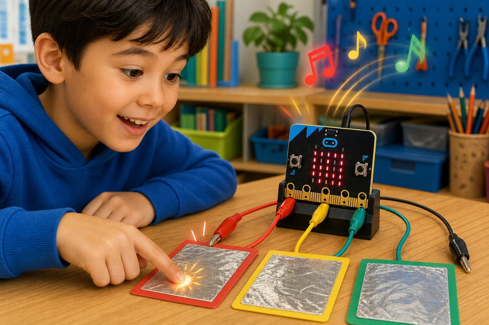

Secret reveal
DetectThe logo is touched
→
DecideSomeone touched it
→
DoShow a hidden message
The micro:bit V2 has a touch-sensitive logo at the top that senses your finger.
Capacitive touch reacts to the tiny electrical change your skin makes, just like a phone screen.
Pins 0, 1, and 2 can also be set up to sense touch.

from microbit import *
while True:
if pin_logo.is_touched():
display.show(Image.YES)input.onLogoEvent(TouchButtonEvent.Touched, function () {
basic.showIcon(IconNames.Yes)
})pin_logo.is_touched() works on the micro:bit V2. For pins, set the mode first, e.g. pin0.set_touch_mode(pin0.CAPACITIVE).